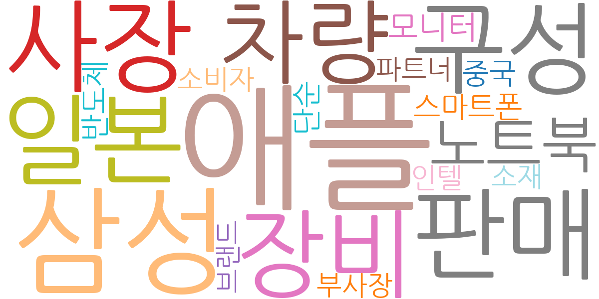
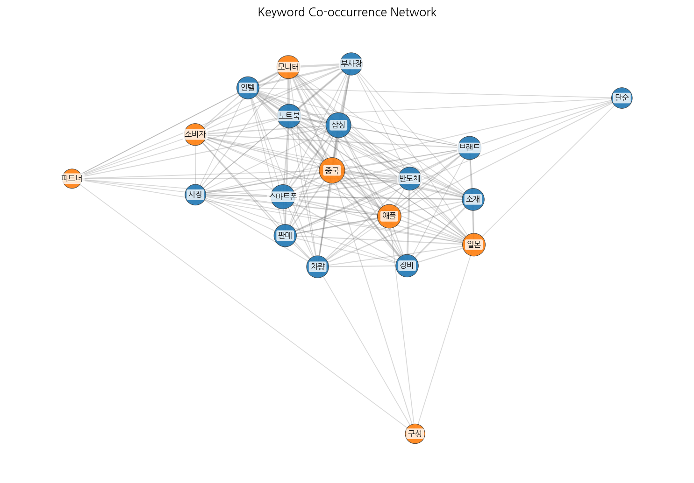
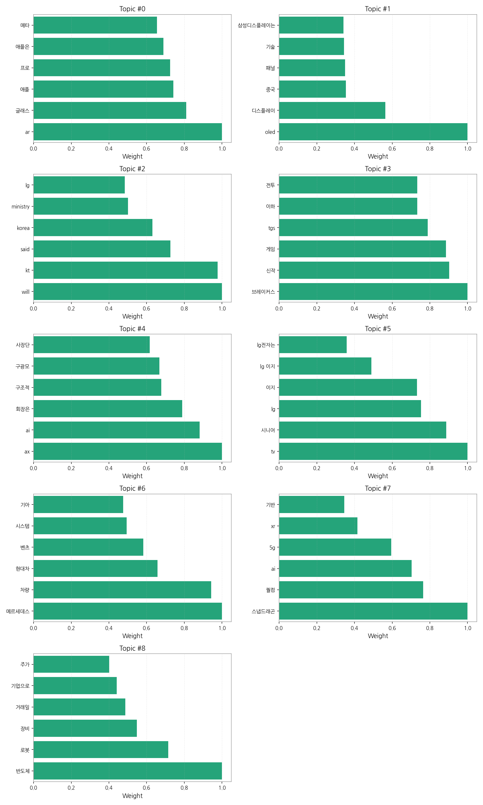
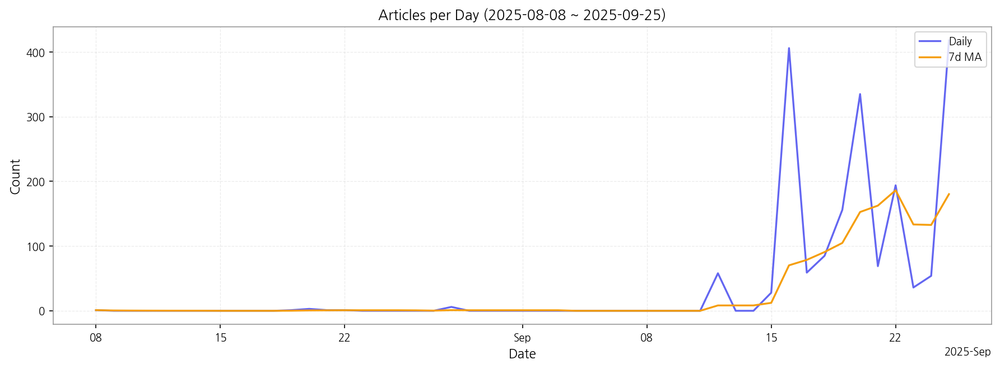

1. 핵심 맥락:
2. 최근 변화/스파이크:
3. 실무 인사이트:

| Rank | Keyword | Score |
|---|---|---|
| 1 | 애플 | 1.141 |
| 2 | 삼성 | 0.787 |
| 3 | 사장 | 0.575 |
| 4 | 구성 | 0.563 |
| 5 | 판매 | 0.556 |
| 6 | 일본 | 0.549 |
| 7 | 장비 | 0.547 |
| 8 | 차량 | 0.536 |
| 9 | 노트북 | 0.527 |
| 10 | 모니터 | 0.502 |
| 11 | 스마트폰 | 0.499 |
| 12 | 반도체 | 0.498 |
| 13 | 단순 | 0.497 |
| 14 | 중국 | 0.488 |
| 15 | 소비자 | 0.451 |



1. 핵심 맥락:
2. 최근 변화/스파이크:
3. 실무 인사이트:
| Idea | Target | Value Prop | Score |
|---|---|---|---|
| 초고해상도 마이크로 LED 기반 AR 글래스용 디스플레이 모듈 | 북미 빅테크 기업 (애플, 메타, 구글 등) | 기존 OLED 대비 압도적인 밝기, 명암비, 수명을 제공하는 초고해상도 마이크로 LED 디스플레이 모듈. AR 글래스의 몰입감 및 사용성 극대화. 경쟁사 대비 높은 기술적 우위 확보. | 4.50 |
| AI 기반 디스플레이 공정 자동화 및 수율 예측 솔루션 | 국내외 디스플레이 제조사 (삼성디스플레이, LG디스플레이, BOE, CSOT 등) | AI 기반 실시간 공정 데이터 분석 및 예측 모델링을 통해 수율 향상 및 불량률 감소. 공정 자동화 및 최적화로 생산성 향상 및 비용 절감. MicroLED 등 차세대 디스플레이 제조 경쟁력 강화. | 4.30 |
| AI 기반 개인 맞춤형 차량용 HUD 솔루션 | 글로벌 완성차 OEM (메르세데스-벤츠, BMW, 현대차, 기아 등) | AI 기반 실시간 운전자 맞춤형 정보 제공으로 운전 편의성 및 안전성 극대화. 시선 추적 기술 기반 최적화된 HUD UI/UX 제공. 기존 HUD 대비 정보 과부하 감소 및 가독성 향상. | 4.20 |
| 차세대 QD-OLED 기반 폴더블 IT 기기용 디스플레이 | 글로벌 IT 기기 제조사 (삼성전자, LG전자, 화웨이, 레노버 등) | QD-OLED 기술 기반의 뛰어난 색재현율, 명암비, 시야각을 제공하는 폴더블 디스플레이. 기존 폴더블 디스플레이 대비 내구성 및 화질 향상. 폴더블 기기의 사용 경험 극대화. | 4.00 |
| 신규 Quantum Dot 소재 기반 고효율 백라이트 유닛 | 글로벌 TV 제조사 (삼성전자, LG전자, TCL, 하이센스 등) | 카드뮴 프리 Quantum Dot 소재 기반의 고효율 백라이트 유닛. 기존 대비 뛰어난 색재현율 및 에너지 효율 제공. 친환경 규제 준수 및 프리미엄 TV 시장 공략. | 3.80 |